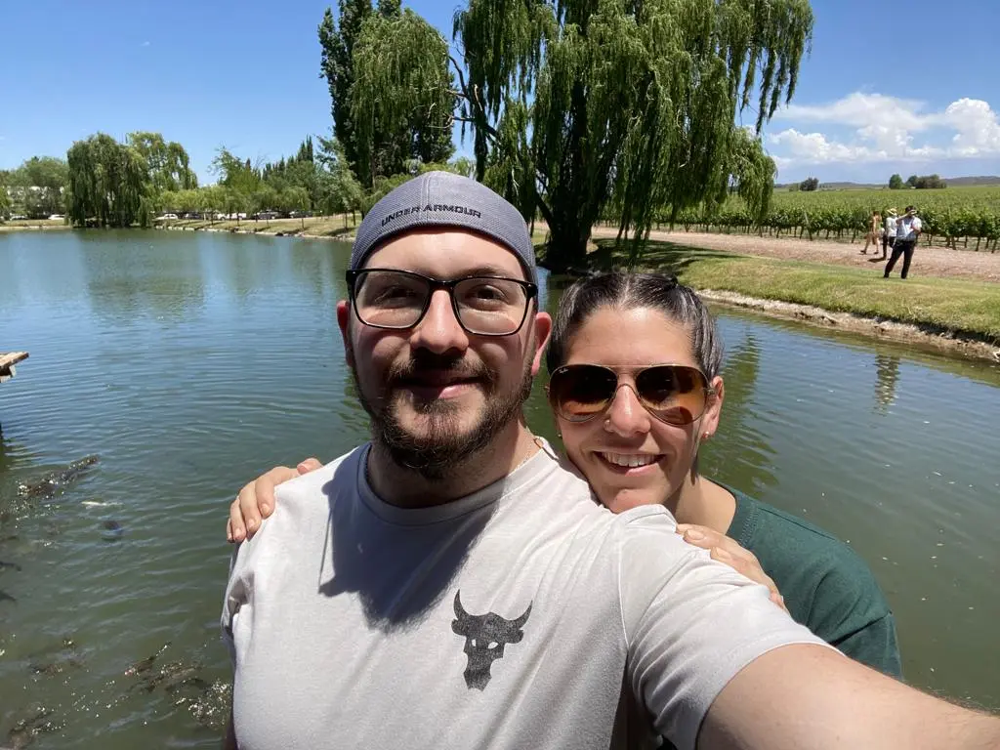

Mi Dedicatoria
Desde que es chica mi hermana me ha enseñado que uno tiene que hacer lo que le apasiona y buscar ese medio para poder vivir bien con uno mismo.
Algunas cosas llegan más tarde que temprano, lo importante es saber disfrutar del camino recorrido y eso lo tenemos que hacer siendo felices y haciendo lo que nos encanta, rodeados de las personas que fomentan ese bienestar. Ya sea con tus garabatos o con tus trabajos más detallados, el hecho de que no haya ni un día en el que no hagas un dibujo demuestra cuanto amas tu vocasión y eso es algo que contagia interes y dedicación.
Gracias Michu por mostrarme ese camino de locura y diversión.
Te amo, Lichu
